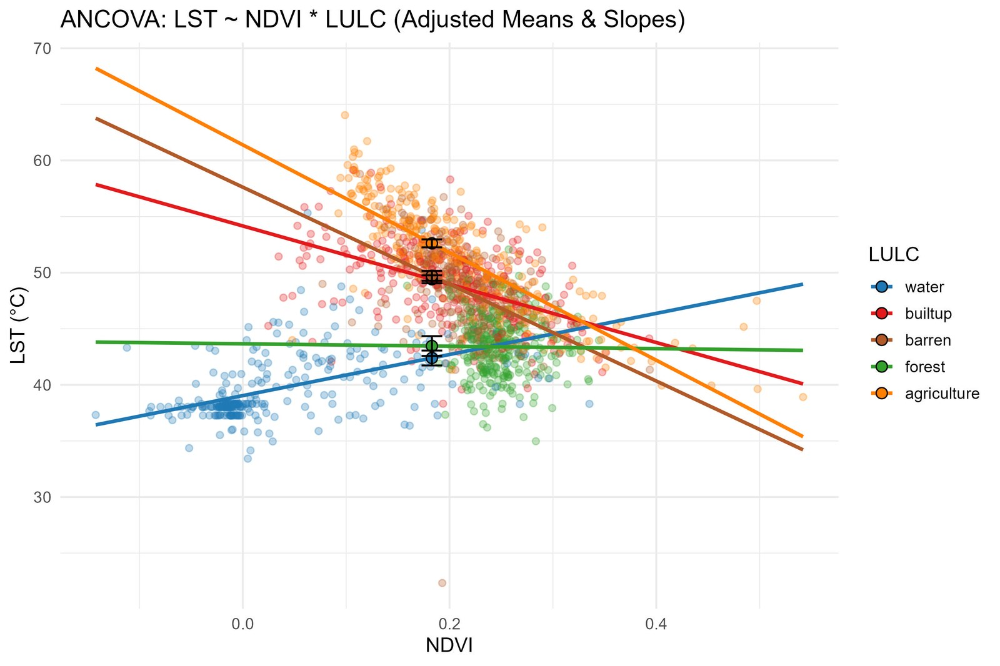
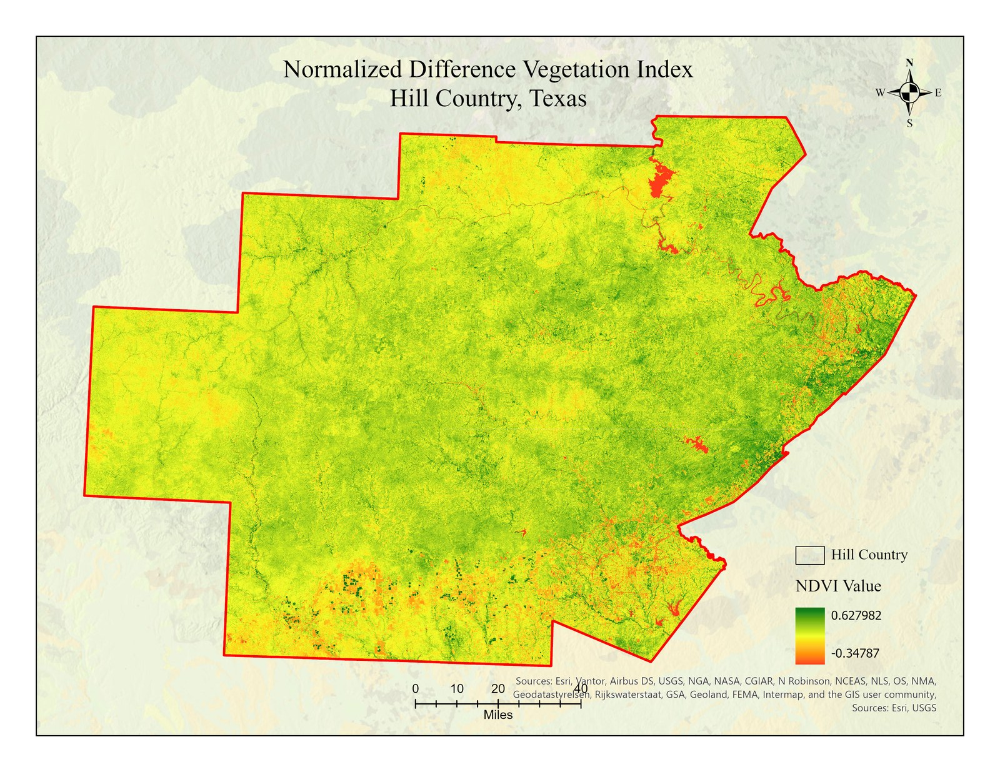
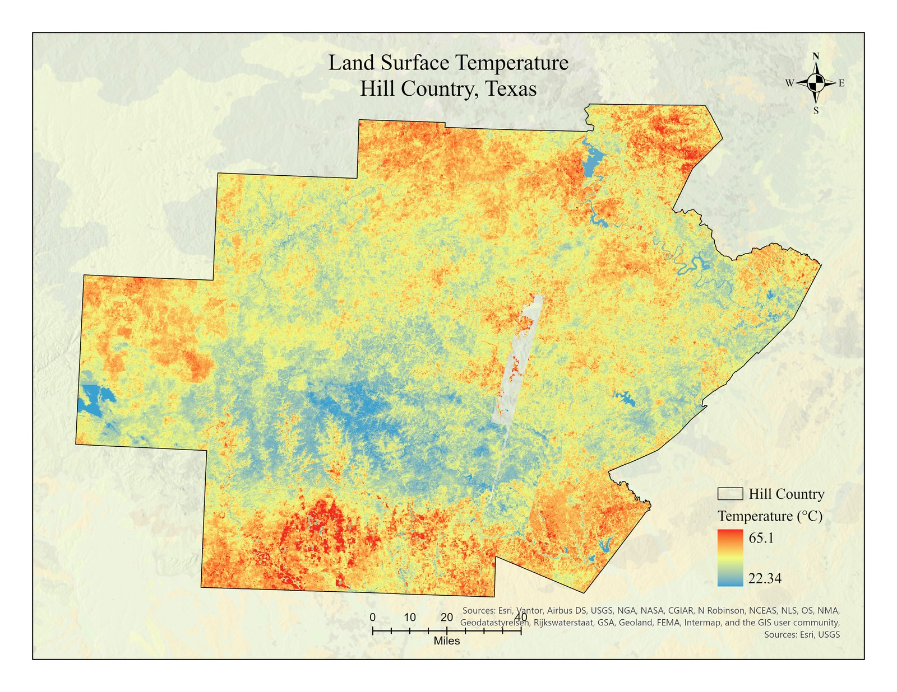
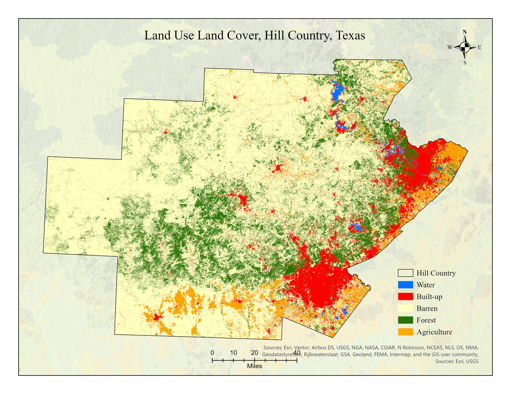
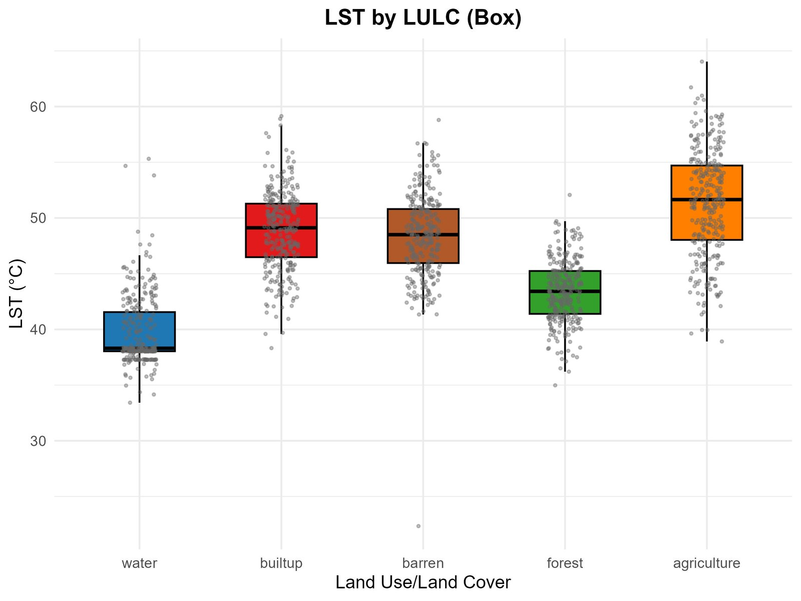
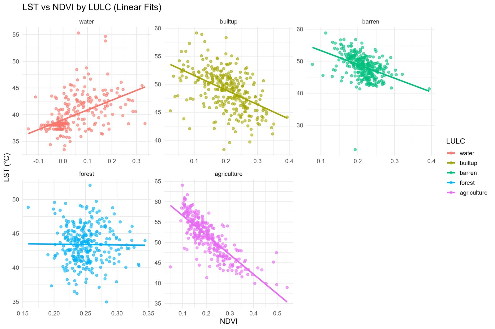

Problem & goal
Vegetation cools the surface, but not equally across land types. This study quantifies how the NDVI–LST relationship varies among water, forest, agriculture, built-up, and barren land.
The interesting result is not "vegetation cools things" but how much that effect changes by land cover — tested with formal statistics in R.
Data
- Landsat 8/9 Collection 2 ARD (Aug 2024) → NDVI & LST, 30 m.
- Annual NLCD 2024 → land cover, 30 m.
- Census TIGER boundaries → 17-county Hill Country extent.
- 1,500 stratified random points (300/class, 900 m spacing).



Methodology
- Mosaic/stack Landsat bands in ArcGIS Pro; compute NDVI (B5/B4) and LST from thermal band ST_B10 (°C).
- Reclassify NLCD into 5 land-cover classes.
- Stratified random sampling (1,500 points); extract NDVI/LST via Zonal Statistics → CSV.
- In R: Levene's test (variances unequal) → Kruskal–Wallis + Dunn post-hoc; Pearson/Spearman correlation; regression; ANCOVA.
Key results
−0.80NDVI–LST correlation in agriculture (strongest cooling)
R² 0.64Agriculture regression fit
p < 0.001Kruskal–Wallis: classes differ for NDVI & LST
| LULC | Mean NDVI | Mean LST (°C) | Pearson r |
|---|---|---|---|
| Water | 0.038 | 39.73 | +0.50 |
| Forest | 0.251 | 43.39 | −0.01 (ns) |
| Agriculture | 0.210 | 51.31 | −0.80 |
| Built-up | 0.203 | 48.89 | −0.48 |
| Barren | 0.214 | 48.36 | −0.43 |
Vegetation strongly cools agriculture, built-up, and barren land, but has almost no effect in forest (already dense, NDVI saturates). ANCOVA confirmed a significant NDVI × land-cover interaction.


Limitations
- NLCD land cover from a separate source (possible pixel-label mismatch).
- NDVI not meaningful over water; NDVI saturation in dense forest.
- Single-date (Aug 2024) snapshot; 30 m resolution; 5 broad classes.